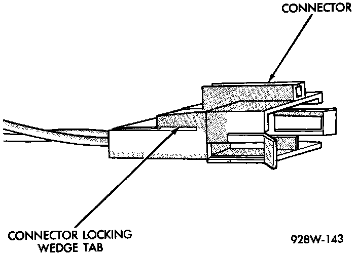
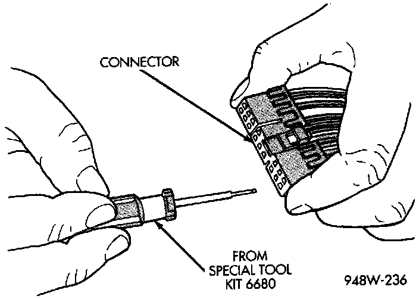
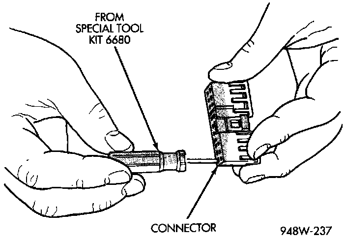

Terminal Replacement
1. Disconnect the battery.2. Disconnect the connector being repaired from its mating half/component.
Connnector Locking Wedge Tab (Typical):

3. Remove the connector locking wedge, if required.
Terminal Removal:

Terminal Removal Using Special Tool:

4. Position the connector locking finger away from the terminal using the proper pick from Special Tool Kit 6680. Pull on the wire to remove the terminal from the connector.
5. Cut the wire 6 inches from the back of the connector.
6. Remove 1 inch of insulation from the wire on the harness side.
7. Select a wire from the terminal repair assembly that best matches the color of the wire being repaired.
8. Cut the repair wire to the proper length and remove 1 inch of insulation.
9. Place a piece of heat-shrink tubing over one side of the wire. Be sure the tubing will be long enough to cover and seal the entire repair area.
Wire Repair:

10. Spread the strands of the wire apart on each part of the exposed wires (Example 1).
11. Push the two ends of wire together until the strands of wire re close to the insulation (Example 2).
12. Twist the wires together (Example 3).
13. Solder the connection together using rosin core solder only. Do not use acid core solder.
14. Center the heat-shrink tubing over the joint and heat using a heat gun. Heat the joint until the tubing is tightly sealed and sealant comes out of both ends of the tubing.
15. Insert the repaired wire into the connector.
16. Install the connector locking wedge, if required and re-connect the connector to its mating half/component.
17. Re-tape the wire harness starting 1-1/2 inches behind the connector and 2 inches past the repair.
18. Connect the battery and test all affected systems.